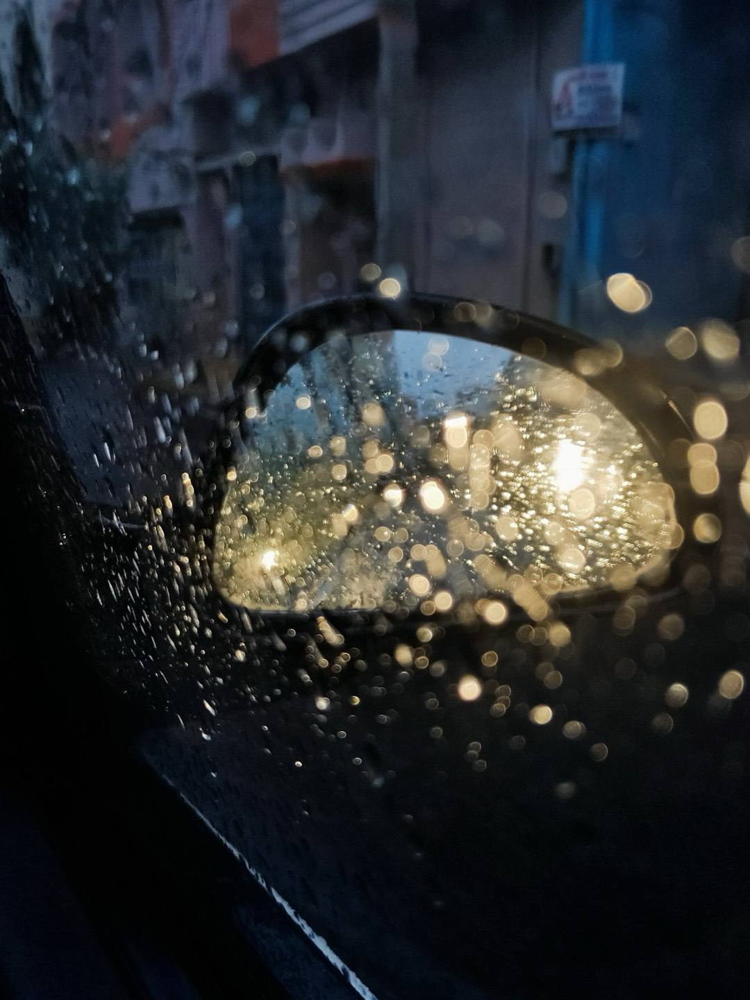
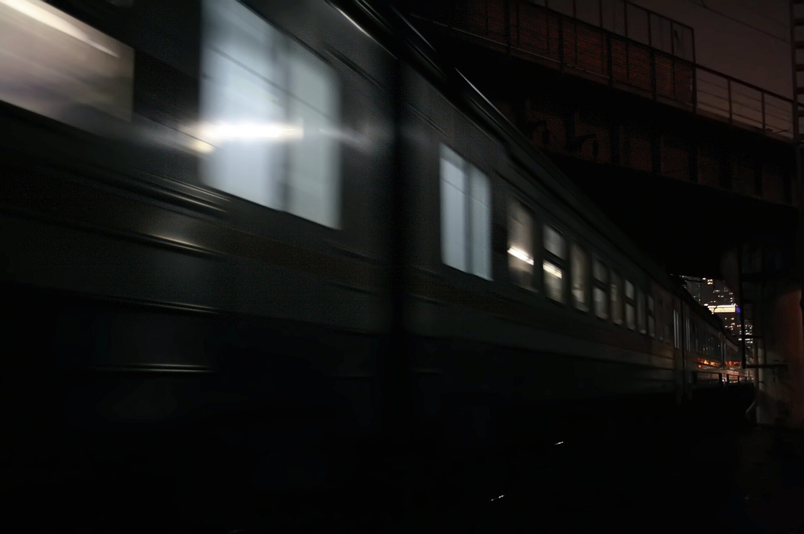
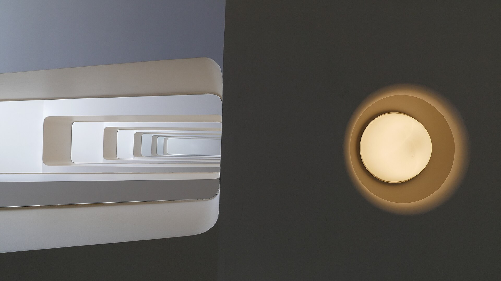

Rain, wind,
a distant train.
Lull layers all three, then fades them out once you fall asleep.

1. Set the three sounds
Each sound has its own level, so rain can lead and the train stays far off.
2. Steady while you drift off
Made for light sleepers, who notice a sound that runs all night.

3. Lull fades them out
Once you are asleep, all three drop away together.
Quiet until morningNothing left playing at three
